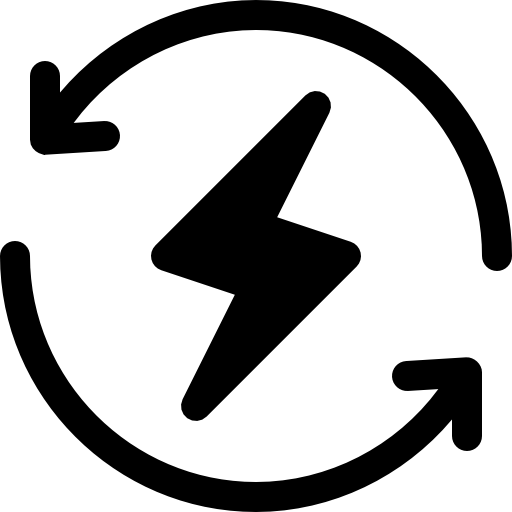

4.1 La economía circular
La economía circular es un modelo de producción y consumo que implica compartir, alquilar, reutilizar, reparar, renovar y reciclar materiales y productos existentes todas las veces que sea posible para crear un valor añadido. De esta forma, el ciclo de vida de los productos se extiende.

4.1.2 Características de las 3R a las 7R

1. Repensar: Nos obliga a darle una vuelta a los sistemas de producción para ver de qué forma se pueden gestionar mejor los recursos y aprovecharlos al máximo.
2. Rediseñar: El proceso de diseño de los productos necesita adaptarse al ecodiseño pensando en reducir al máximo el impacto de los procesos de producción.
3. Reutilizar: El usar y tirar ya no se lleva. Ahora lo que se busca es usar una y otra vez los diferentes productos para alargar su vida útil.

4. Reparar: Se apuesta por reparar aquellos objetos que se han estropeado, reduciendo así el número de residuos que se generan.
5. Recuperar: Consiste en recoger materiales que han quedado olvidados o ya no se usan y darles una nueva vida útil.
6. Renovar: Se trata de actualizar aquellos objetos que ya tienes o de los que te has cansado, dándoles un nuevo aire y actualizándolos para que puedas volver a utilizarlos.

7. Reciclar: Permite convertir los residuos en material y recursos que vuelven a entrar en el sistema de producción.
4.2 Modelos de producción y economía lineal
| Economía Circular | Economía Lineal |
|---|---|
| Modelo productivo basado en el reciclaje | Modelo productivo tradicional (se extrae, se produce y se desecha) |
| Utiliza residuos como insumos | Extrae recursos naturales |
| Reutilización y reciclaje de productos | Mayor producción de desechos |
| Busca implementar fuentes de energías renovables | Utiliza fuentes de energía convencional |
| Reduce las emisiones de gases contaminantes | Genera altos niveles de contaminación ambiental |
| Busca el cuidado del medio ambiente | No tiene en cuenta el cuidado del medio ambiente |
4.3 El consumismo
Causas del consumismo
- Publicidad masiva: Creación de necesidades artificiales mediante marketing.
- Crédito fácil: Acceso simple a financiamiento para compras inmediatas.
- Presión social: Estatus asociado al consumo de determinadas marcas.
- Obsolescencia programada: Productos diseñados con vida útil limitada.
- Globalización: Mayor disponibilidad de productos internacionales.
Beneficios del consumismo
- Impulso económico: Genera empleo y crecimiento del PIB.
- Innovación: Competencia que mejora productos y servicios.
- Variedad: Amplia gama de opciones para los consumidores.
- Conveniencia: Acceso rápido a bienes y servicios.
Problemas del consumismo
- Impacto ambiental: Sobreexplotación de recursos y contaminación.
- Endeudamiento: Familias con altos niveles de deuda.
- Desechos: Aumento exponencial de basura no reciclable.
- Desigualdad: Brecha entre quienes pueden consumir y quienes no.
Material de referencia
CONSUMISMO Y SOCIEDAD: UNA VISIÓN CRÍTICA DEL HOMO CONSUMENS
Descargar PDF4.4 Economía Verde
La economía verde es un modelo económico que busca el desarrollo sostenible sin degradar el medio ambiente, promoviendo energías renovables, eficiencia energética y gestión responsable de recursos.
Comparativa: Economía Verde vs Economía Lineal
| Aspecto | Economía Verde | Economía Lineal |
|---|---|---|
| Objetivo principal | Sostenibilidad ambiental + crecimiento económico | Crecimiento económico sin considerar impactos ambientales |
| Uso de recursos | Optimización y conservación | Explotación intensiva |
| Energía | Renovable (solar, eólica, hidroeléctrica) | Combustibles fósiles (petróleo, carbón) |
| Residuos | Minimización y valorización | Generación masiva sin tratamiento adecuado |
| Emisiones | Carbono neutral/negativo | Alta huella de carbono |
| Innovación | Tecnologías limpias y eco-diseño | Innovación centrada solo en productividad |
Beneficios clave
- ✅ Creación de empleos "verdes" (energías renovables, reciclaje)
- ✅ Reducción de la pobreza mediante trabajos sostenibles
- ✅ Mayor eficiencia en el uso de recursos naturales
- ✅ Resiliencia ante el cambio climático
- ✅ Salud pública mejorada (menos contaminación)
4.5 Ciclo de vida de un producto
El ciclo de vida de un producto analiza todas las etapas por las que pasa un artículo desde su concepción hasta su disposición final, evaluando su impacto ambiental en cada fase.
Fases del ciclo de vida
| Fase | Descripción | Impacto ambiental | Estrategias de mejora |
|---|---|---|---|
| 1. Diseño | Conceptualización y desarrollo del producto | Determina el 80% del impacto futuro | Ecodiseño, materiales sostenibles |
| 2. Extracción | Obtención de materias primas | Agotamiento recursos, contaminación | Uso de materiales reciclados |
| 3. Producción | Fabricación y ensamblaje | Emisiones, energía, residuos | Energías renovables, eficiencia |
| 4. Distribución | Transporte y comercialización | Huella de carbono logística | Circuitos cortos, embalajes reutilizables |
| 5. Uso | Vida útil del producto | Depende del tipo de producto | Durabilidad, eficiencia energética |
| 6. Fin de vida | Desecho o recuperación | Residuos, contaminación | Reciclaje, reutilización, compostaje |